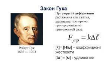
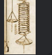
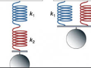
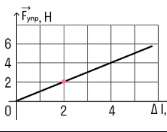
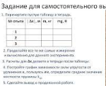
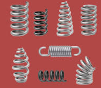
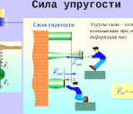

Краткая теория
В настоящее время этот закон Гука в обобщенном виде служит основанием математической теории упругости.
...

Цель исследования
Модельным образцом показать зависимость силы упругости.
...

Шаг 1
Подвесьте одну из двух пружин без груза за крепежный болт
...
Шаг 2
С помощью курсора по шкале линейки снимите отсчет положения нижнего конца пружины
...

Шаг 3
Подвесьте к пружине держатель массы =10г с грузом массы
...

Шаг 4
Снимите отсчет по линейке нового положения нижнего конца пружины
...

Шаг 5
Разность отсчетов , соответствующую удлинению пружины занесите в таблицу
...

Шаг 6
Повторите измерения пятьдесят раз, пока общая масса грузов не достигнет 1000г
...